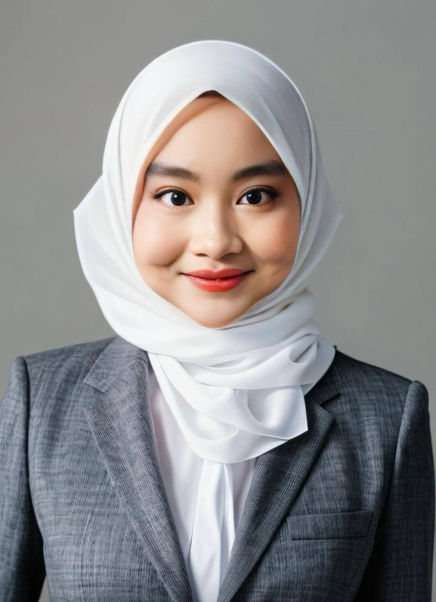

Nurfarahin Afifah binti Radzuan
I am a motivated and dedicated student with a strong interest in Data Science and Software Engineering. With a solid foundation in programming and a passion for continuous learning, I aim to contribute meaningfully to innovative tech solutions. This personal website serves as a digital portfolio to showcase my academic journey, skills, and experience.
Education
- Universiti Teknologi PETRONAS (UTP) – CGPA: 3.69 (First Semester)
- Universiti Malaya(PASUM) – Foundation in Physical Science (2023–2024)
- SMK Dato’ Sulaiman – SPM: 9A’s (2022)
Technical & Soft Skills
Languages: Python, C++
Tools: Git, VS Code, Canva
Soft Skills: Public Speaking, Leadership
Languages: English(Fluent), Malay(Native)
Experience & Projects
EzGiG App Proposal: A freelance app idea for a class innovation project (2024)
CV Website Project: This responsive site using HTML, CSS & JS
Achievements & Leadership
Pantun Competition Achievements
| Year | Competition | Level | Result |
|---|---|---|---|
| 2025 | KESUMA | National | Third Place |
| 2025 | GEMALA (UniSZA) | National | Third Place |
| 2025 | SANTUN | National | Participation |
| 2024 | FANTASI | Inter-University | Participation, Best Pemantun |
| 2022 | Pesta Pantun Johor | State | Champion, Best Pemantun |
| 2022 | Pesta Pantun Batu Pahat | District | Champion,Best Pemantun |
Leadership & Roles
- Peer Mathematics Tutor (2022): Mentored classmates and led study groups
- Student Leaders Board (2022): School leadership and discipline board
- Vice President – Sports Team (2022): Organized and led sports events
- Sergeant – Kadet Polis (2022): Uniformed body responsibilities and team coordination
Contact Information
Email: nurfarahin.afifah@gmail.com
GitHub: github.com/ffyqvn
LinkedIn: linkedin.com/in/ffyqvn